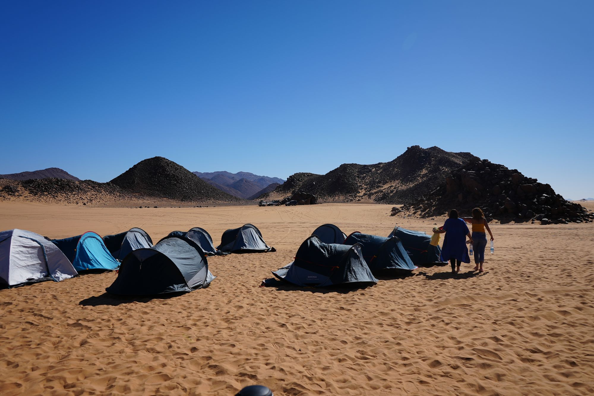
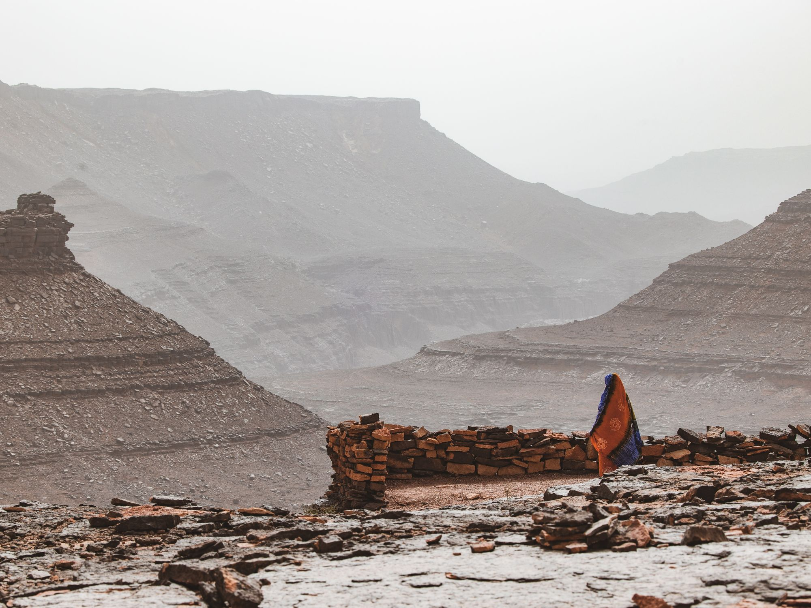
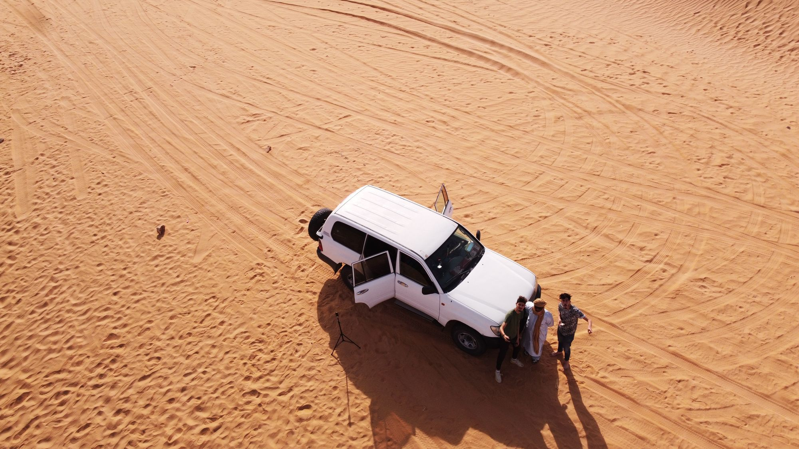
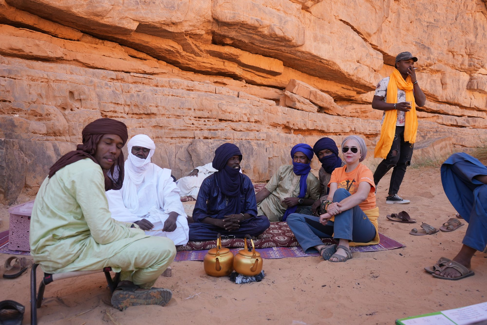
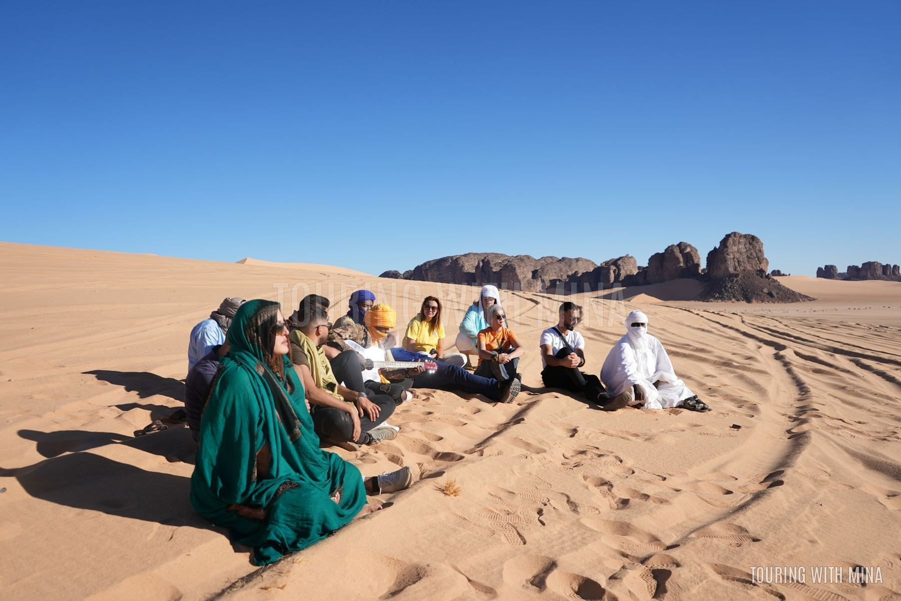
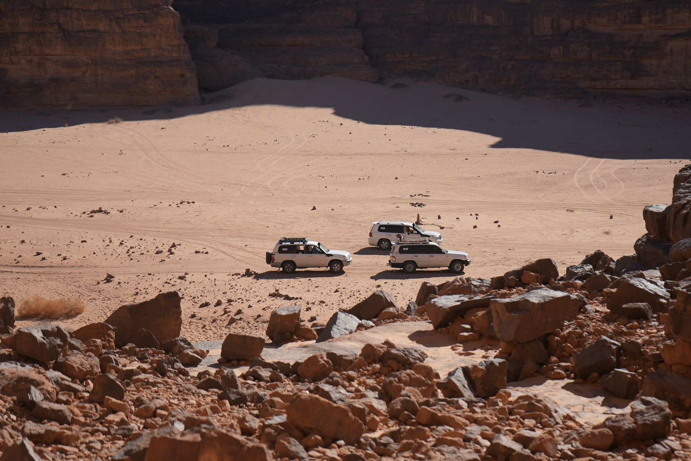
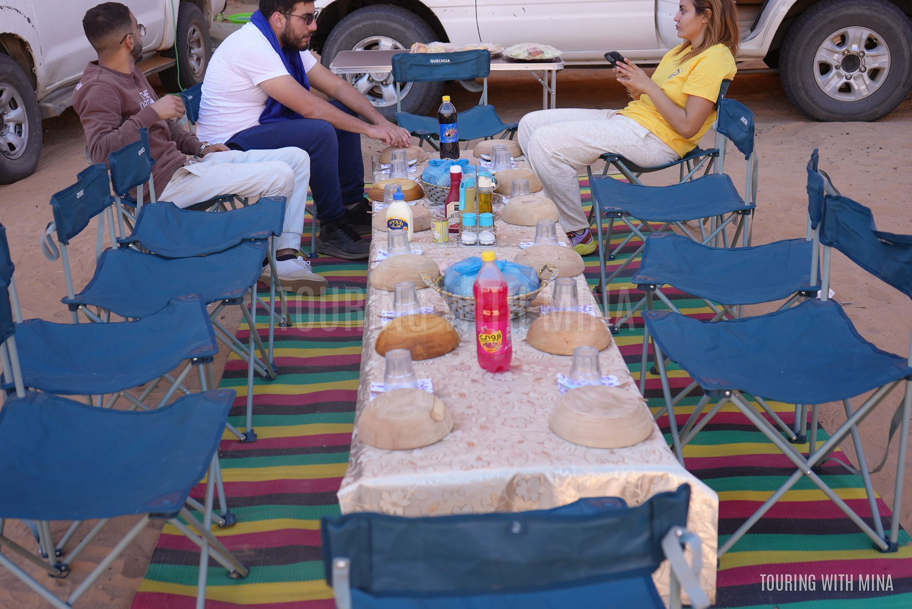
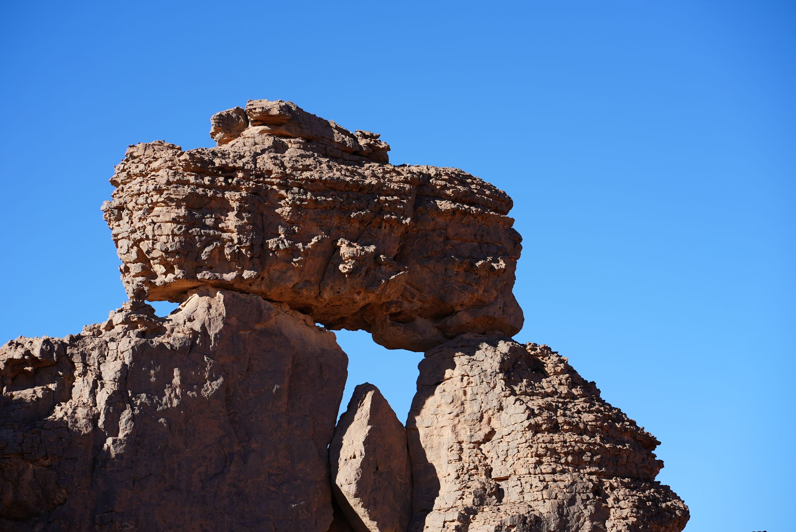

Le thé avant le soleil
Le camp se réveille doucement. Le thé chauffe sur les braises pendant que la lumière monte sur les dunes.
Touring with Mina, voyages privés au Sahara algérien
Voyages privés à Djanet, guidés par une équipe Imouhagh qui connaît chaque dune et chaque source.
Êtes-vous prêt à embarquer pour un voyage inoubliable vers l'une des destinations les plus enchanteresses du monde ? Nous vous guidons au cœur du Sahara algérien, entre les falaises du Tassili et les dunes rouges de la Tadrart.
Nos voyages sur mesure vous font explorer des paysages à couper le souffle, vous plonger dans une culture riche et créer des souvenirs pour toute une vie.
Découvrir notre histoire

Chaque programme est un point de départ. La durée, le rythme et les étapes se règlent avec vous.
Tous les circuits
L'oasis d'Ihrir, le canyon d'Issendilène et sa guelta, le marché de Djanet et une rencontre avec les femmes touarègues.
107 000 DA par personneVoir le circuit
Le circuit Ihrir avec une journée de plus pour Adayk, la célèbre gravure de la vache qui pleure et la sculpture de l'Éléphant.
118 000 DA par personneVoir le circuit
El Birdj, Moul Enaga et Tin Merzouga, la plus haute dune d'Algérie. Billets Alger-Djanet et visa compris.
210 000 DA par personneVoir le circuit
La Tadrart Rouge, puis une dernière journée à Djanet : le marché et la célèbre gravure de la vache qui pleure.
225 000 DA par personneVoir le circuit
La montée sur le plateau avec les ânes, les cyprès millénaires de Tamaghit et les grandes fresques de Sefar, Tin Tazarift et Idjabaren.
Tarif sur demandeVoir le circuit
Cinq jours au rythme de la caravane, d'Adaïk à la guelta d'Essendilène, puis les dunes de l'Erg Admer en 4x4.
Tarif sur demandeVoir le circuit
La grande traversée : de la frontière tunisienne au Tassili par le Grand Erg Oriental, la Tadrart Rouge et Ihrir, puis retour par le ferry Alger-Valence.
Tarif sur demandeVoir le circuit
Votre voyage à Djanet sera unique, à votre image : un itinéraire construit selon vos préférences et votre rythme.
Voir le circuitDe l'oasis aux dunes rouges, chaque étape a son caractère.
Découvrir les lieuxCe que les voyageurs viennent chercher à Djanet, et ce qu'ils en rapportent.
L'art rupestre
Loin des villes et des écrans, le désert offre un calme qu'on ne trouve plus ailleurs. Beaucoup de voyageurs disent qu'ils y ont enfin déconnecté.

Aucune lumière à des kilomètres : la Voie lactée se voit à l'œil nu, depuis le bivouac.

Forêts de roches, arches, dunes rouges et canyons. Des formes sculptées par le vent pendant des millions d'années.

Les peintures et gravures du Tassili, classées par l'UNESCO, se visitent sur nos circuits.

Le thé, la musique, les récits autour du feu : on partage le quotidien de ceux qui connaissent le désert.

D'octobre à avril, les journées sont agréables et la lumière superbe. La bonne saison pour partir.
Du premier thé au ciel étoilé, voici le rythme d'un jour de voyage.

Le camp se réveille doucement. Le thé chauffe sur les braises pendant que la lumière monte sur les dunes.

Les 4x4 quittent le bivouac. On s'arrête souvent : une arche, une trace, un point de vue que le chauffeur connaît.
Déjeuner préparé sur place à l'abri d'un rocher, puis la sieste. Le désert se vit aussi à l'arrêt.

On monte sur la dune pour le coucher du soleil. Au retour, le pain cuit dans le sable et la guitare sort.
Aucune lumière à des kilomètres. On s'endort dehors ou sous la tente, sous un ciel que l'on ne voit plus en ville.
Tindi, taguella cuite dans le sable, bijoux en argent : la culture de Djanet se vit pendant le voyage.
Découvrir la cultureDe la réservation au dernier bivouac, notre équipe s'occupe de chaque détail.

Les paysages de Djanet, des anciennes formations rocheuses aux dunes majestueuses, avec nos guides expérimentés.
L'héritage touareg, les rituels traditionnels et la cuisine authentique du Sahara.
Expédition en 4x4 et nuits à la belle étoile, sous des tentes confortables.
Un itinéraire construit selon vos préférences et votre rythme.

Réservation, transport et logistique gérés avec précision et attention.

Petit-déjeuner, déjeuner, collation et dîner préparés sur place.

« Je suis tombée amoureuse de Djanet. Je suis là pour vous offrir un voyage que vous n'oublierez pas. »Mina



Oui. En voyageant avec une agence algérienne agréée, vous pouvez l'obtenir à l'arrivée. Le dossier se prépare avant votre départ. Les détails sont sur la page Infos pratiques.
D'octobre à avril. De décembre à février, les journées sont agréables et les nuits froides. Nous détaillons chaque période dans Quand partir.
En bivouac, sous tente ou à la belle étoile. Matelas, tente, chaise et table sont fournis ; pensez à votre sac de couchage. Voir le matériel à prévoir.
Oui. Chaque départ est organisé pour vous, que vous veniez seul, en couple, en famille ou entre amis. Les dates et le rythme se décident ensemble.
Du ciel aux gueltas d'Ihrir, des dunes à la Sebiba : nos voyages en une minute trente.
Dites-nous vos dates et vos envies. Mina vous répond personnellement sous 24 heures.